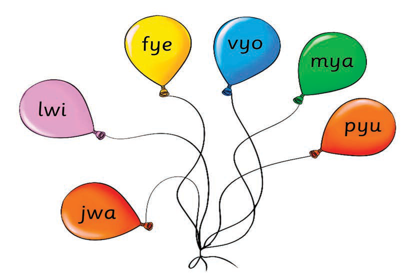
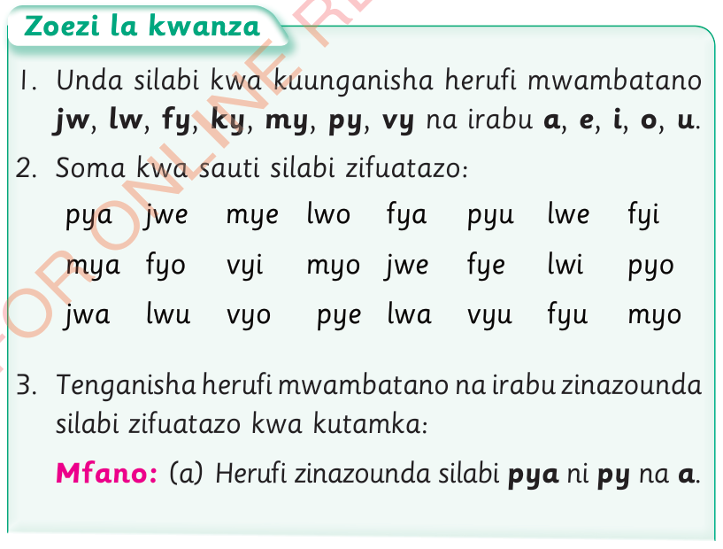

2. Soma kwa sauti silabi zifuatazo:


Zoezi la kwanza
- 1. Unda silabi kwa kuunganisha herufi mwambatano jw, lw, fy, ky, my, py, vy na irabu a, e, i, o, u.
- 2. Soma kwa sauti silabi zifuatazo: pya jwe mye lwo fya pyu lwe fyi mya fyo vyi myo jwe fye lwi pyo jwa lwu vyo pye lwa vyu fyu myo
- 3. Tenganisha herufi mwambatano na irabu zinazounda silabi zifuatazo kwa kutamka: Mfano: (a) Herufi zinazounda silabi pya ni py na a.